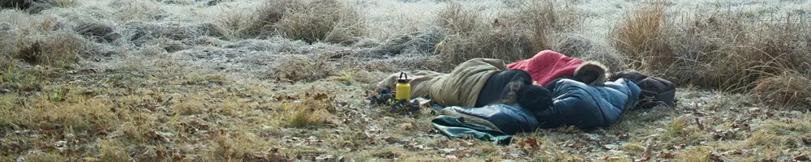

Memilih Matras Camping: Keunggulan Matras Busa PE untuk Kenyamanan Maksimal
Dipublikasikan pada 31 Juli 2025

Setelah sepekan berkutat dengan rutinitas pekerjaan, menghabiskan akhir pekan di alam terbuka adalah cara terbaik untuk menyegarkan pikiran. Kegiatan berkemah atau camping tidak hanya mengembalikan ketenangan, tetapi juga terbukti dapat meningkatkan kebahagiaan dan produktivitas.
Agar pengalaman berkemah menjadi nyaman, pemilihan perlengkapan yang tepat adalah kunci. Salah satu perlengkapan yang sering dianggap sepele namun perannya sangat vital adalah matras camping. Bukan sekadar alas duduk, matras adalah benteng pertahanan Anda dari dingin dan kerasnya permukaan tanah.
Di antara berbagai jenis matras yang ada di pasaran, matras busa PE (Polyethylene) menjadi pilihan favorit banyak orang, mulai dari pendaki gunung hingga keluarga yang berkemah ceria. Mari kita bedah tuntas apa itu matras busa PE dan mengapa ia bisa menjadi teman berkemah terbaik Anda.
Peran Penting Matras Saat Berkemah
Fungsi matras jauh lebih dari sekadar membuat tidur lebih empuk. Berikut adalah peran krusialnya:
- Isolator Suhu: Fungsi terpenting matras adalah menghalangi suhu dingin dari tanah agar tidak merambat ke tubuh Anda saat tidur. Tanpa matras, panas tubuh akan cepat hilang terserap tanah, membuat Anda kedinginan sepanjang malam.
- Memberikan Kenyamanan: Matras memberikan lapisan empuk yang melindungi tubuh dari permukaan tanah yang keras, berbatu, atau tidak rata.
- Menjaga Kebersihan: Menjadi lapisan pemisah antara sleeping bag atau tubuh Anda dengan tanah yang lembap dan kotor.
Mengenal Matras Busa PE (Closed-Cell Foam): Pilihan Praktis dan Andal
Matras busa PE adalah jenis matras closed-cell foam, yang berarti ia terbuat dari busa padat dengan jutaan gelembung udara kecil yang tidak saling terhubung (sel tertutup). Material utamanya adalah Polyethylene (PE), sejenis polimer plastik yang memiliki karakteristik unik.
Karakteristik inilah yang membuat matras busa PE sangat ideal untuk kegiatan luar ruangan.
Tiga Keunggulan Utama Matras Busa PE
-
Ringan dan Mudah Dibawa
Berkat jutaan rongga udara di dalamnya, matras ini memiliki bobot yang sangat ringan. Sifat bahan PE yang lentur dan fleksibel membuatnya tidak mudah rusak atau sobek saat dilipat atau digulung. Anda bisa dengan mudah mengikatnya di luar ransel tanpa perlu khawatir akan tertusuk atau bocor. -
Empuk dan Nyaman
Struktur busa padatnya mampu memberikan bantalan yang cukup untuk meredam kontur tanah yang tidak rata, memberikan kenyamanan saat Anda duduk atau berbaring. -
Isolator Suhu yang Sangat Baik
Ini adalah keunggulan utamanya. Struktur sel tertutup pada busa PE efektif memerangkap udara, yang berfungsi sebagai isolator suhu yang andal. Ia akan menahan hawa dingin dari tanah (baik itu tanah, pasir, atau bebatuan) dan menjaga suhu tubuh Anda tetap hangat.
Kapan Sebaiknya Memilih Matras Busa PE?
Dengan segala keunggulannya, matras busa PE menjadi pilihan yang sangat cerdas, terutama dalam beberapa skenario berikut:
- Untuk Pemula: Harganya yang terjangkau dan daya tahannya yang luar biasa (tidak bisa bocor) menjadikannya pilihan sempurna bagi mereka yang baru memulai hobi berkemah.
- Aktivitas Hiking & Trekking: Karena ringan dan tahan banting, matras ini sangat disukai para pendaki yang tidak ingin menambah beban signifikan pada bawaan mereka.
- Sebagai Alas Tambahan: Banyak pendaki berpengalaman menggunakan matras busa PE sebagai lapisan dasar di bawah matras angin (inflatable mat) mereka untuk proteksi ekstra dari benda tajam dan untuk menambah kemampuan insulasi suhu.
Jadi, jika Anda mencari alas tidur camping yang praktis, andal, ringan, dan tidak akan menguras kantong, matras camping berbahan busa PE adalah jawabannya. Siap untuk petualangan yang lebih nyaman?